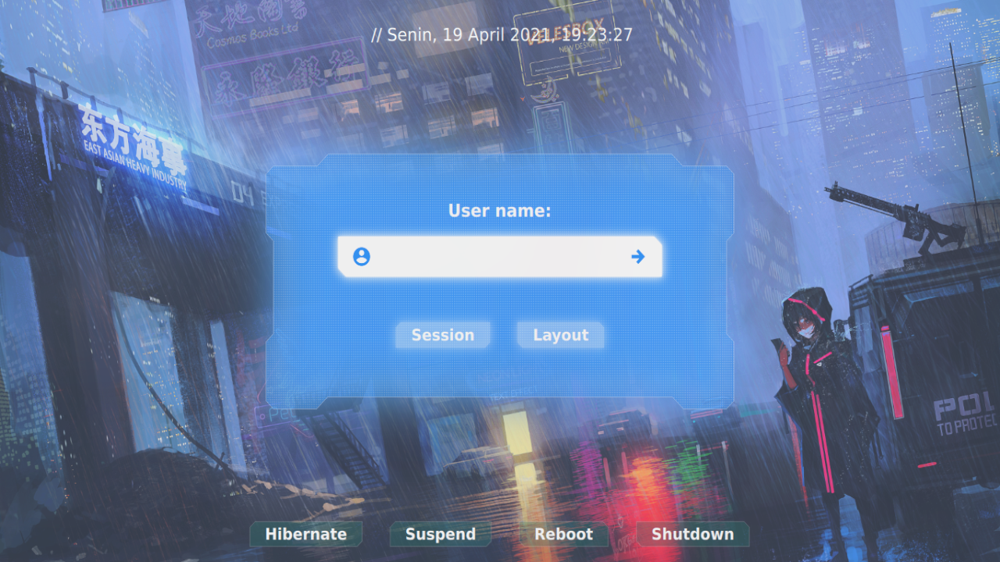

<h1>netlogin-userlist (my backup own themes)</h1>
<p>modified
<ul>
    <li>anime background</li>
    <li>change with gaussian blur on center menu</li>
    <li>change button opacity</li>
</ul>
<!-- https://github.com/sddm/sddm -->
<a href="screenshot.png" ></a></p>